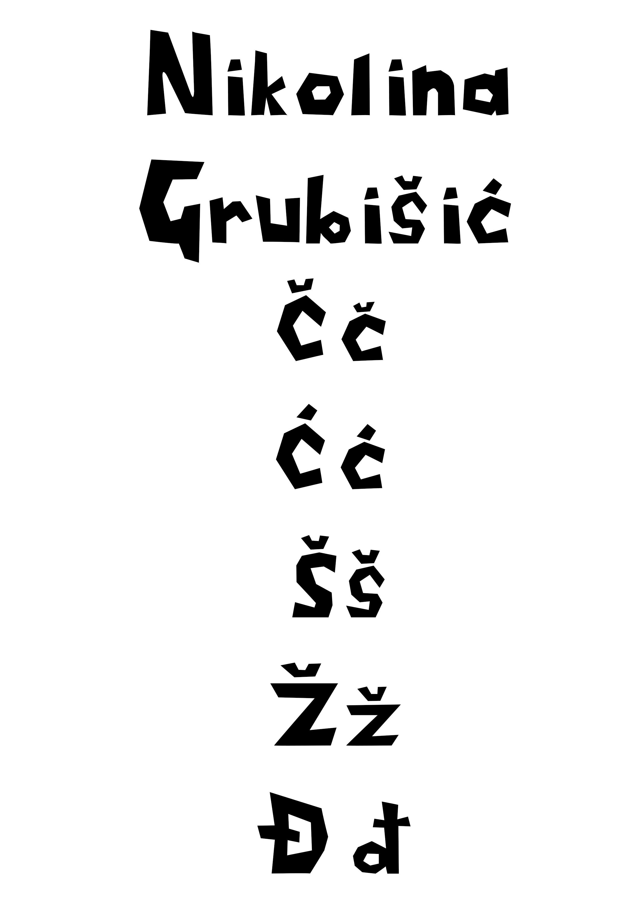
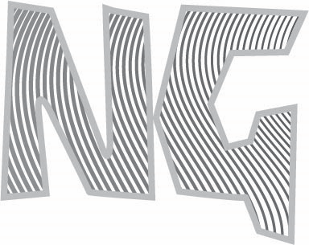
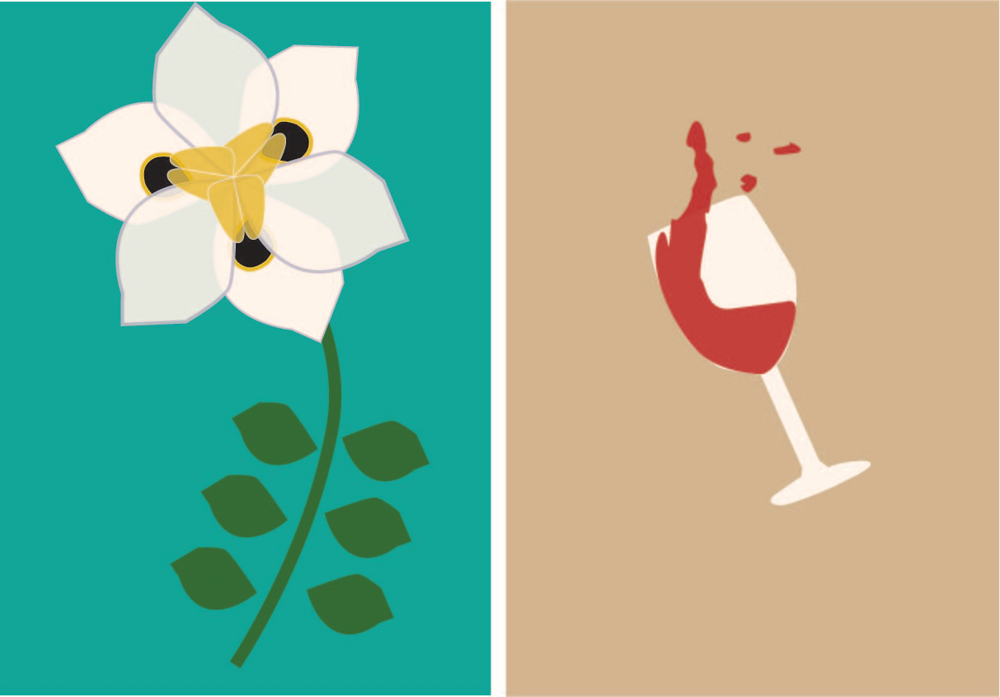
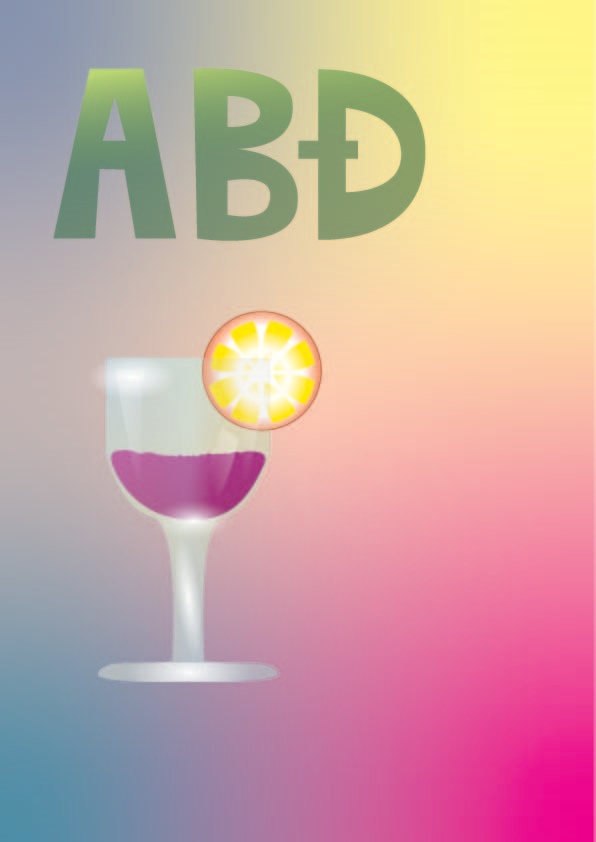
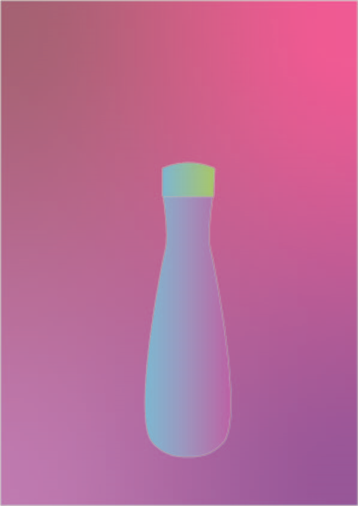
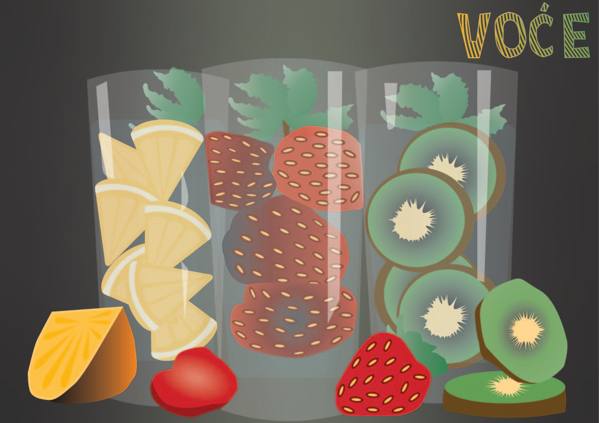
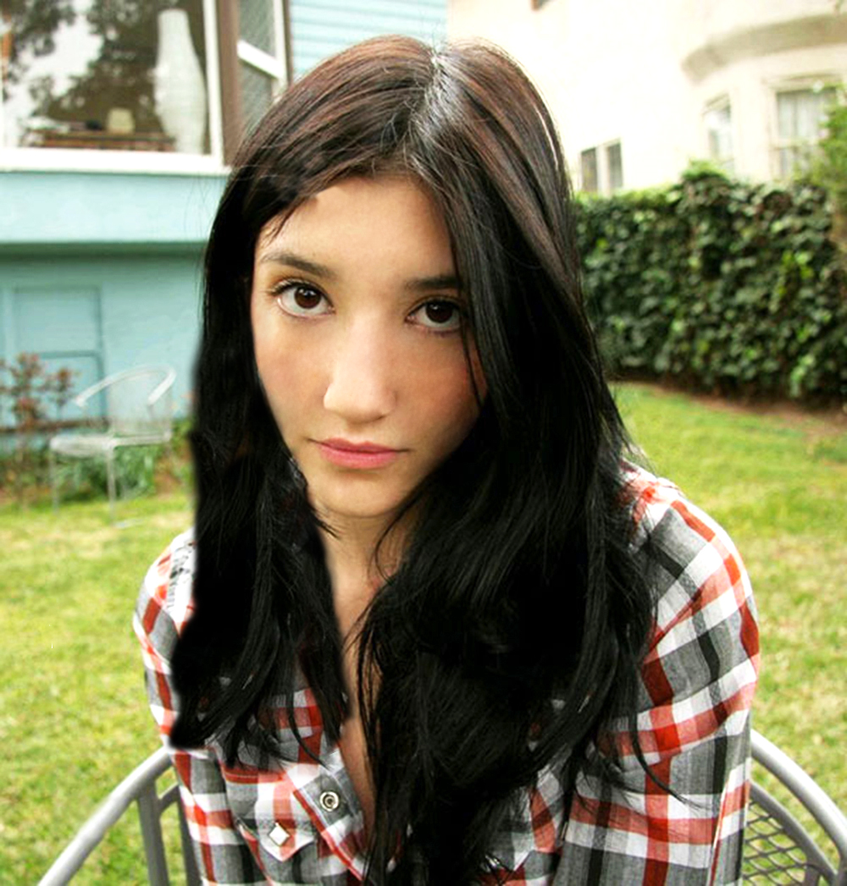
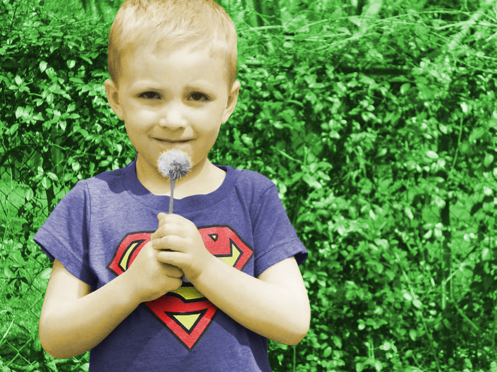
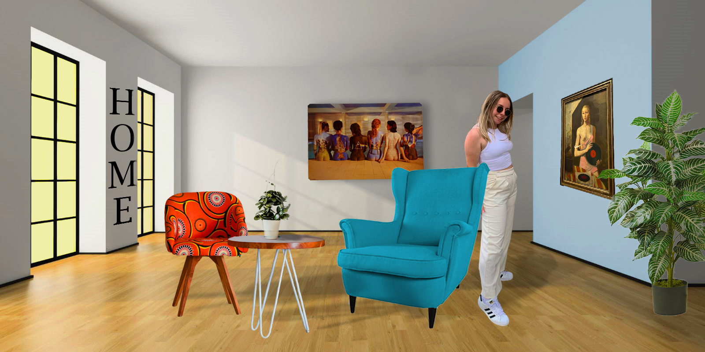

U prvoj vježbi smo naučili kreirati vlastiti font u FontForge-u.Naučili smo se koristiti glavnim elementima i uz malo kreativnosti dobili bi vlastiti font.
U drugoj vježbi smo kreairali Beizerove krivulje.Naučili smo im dodati željenu boju, debljinu obruba te smo između njih naučili napraviti interpolaciju odnosno Blend.
U trećoj vježbi smo ovladali tehnikama kao što su rotacija,scale,transparencija,multipliciranje oblike i mnoge druge.Naučili smo ih oblike aplicirati drugim bojama te stvoriti vlastite boje.Ovladali smo alatom Pen koji nam je bio glavni element.
U četvrtoj vježbi smo se koristili tehnikama spajanja i izrezivanja objekata. Susreli smo se s različitim vrstama gradijenata kao što su linearni,radijalni,mesh.Primjenjivali smo transparenciju na određenim dijelovima te naučili poredak slojeva.
 U prvom projektnom zadatku primjenili smo sve tehnike i elemente iz prethodne četiri vježbe.Svoj rad sam izrađivala u Adobe Ilustratoru kao i četiri prve vježbe odrađene u semestru.
U petoj vježbi koristili smo se tehnikama retuširanja.Alati koje smo koristili su bili jako zanimljivi i laki za korištenje a to su npr.clone stamp,dust and scratches te healing brush.Slika desno je moj rezultat primjene tehnika te vježbe.

U šestoj vježbi prolazili smo kroz tehnike koloriranja. Na cro bijeli forografijama selektirali smo dijelove te stvarali maske kojima smo skrivali ili otvarali efekte kolorizacije. Boje smo aplicirali na zasebne slojeven kako ne bismo uništili originalne tonove.

U sedmoj vježbi smo kombinirali više fotografija izrezivanjem dijelova različitih slika te spajanje u jednu cjelinu. U ovoj vježbi smo prošli kroz raličite tehnike selektiranja jednostvanijih i složenih oblika. Također sam naučila uklopiti sjene objekata korekcijom boja kako bi se pojačao dojam realističnosti.

U drugom projektnom zadatku smo primejnili tehnike i elemente od pete do sedme vježbe. Drugi projektni zadatak sam izrađivala u Adobe Photoshopu.
U osmoj vježbi smo se bavili obradom video materijala u uvođenjem multimedija u video projekt.Izrađivali smo kinemagraf odnosno spajanje statične i pokretne slike. Odnosno izradili smo video koji se ponavlja u beskonačnost (GIF)


U devetoj vježbi smo naučili rezati i spajati video isječke iz više izvora. Naučili smo dodavati video efekte(scale,rotation,efekt boja...),brisati i dodavati zvuk te dodavati i obrđivati tekst(statični i pomični tekst)